TracePoint Visual Review
The Phase 2 brief arrived cut off after Part 1 ("Opportunities for…"). This review covers Part 1 in full. Later parts will be added once the rest of the brief is shared. Functional defects are left to the development conversation and are only mentioned where they show up visually.
Verdict
TracePoint already has a believable identity: a dark command-center look, navy surfaces, one blue accent and Geist type. A handful of screens look premium today: the Help Center, the vehicle record header, the Qualifications split view and the Settings profile form. What keeps it from feeling like polished enterprise software is that no two modules are built from the same parts. Every page styles itself by hand. The result is small, faint, uppercase text everywhere, cards nested inside cards, four different header treatments, and tables that don't adapt below desktop width.
The fix is mostly foundational, not cosmetic: about a dozen tokens and eight components, applied page by page. None of it needs new features.
These scores are my own judgment, informed by the measurements below. A 5 would mean the module set reads as one product built from one kit.
Measured evidence
Measured in the browser across 23 screens at 1440×900, plus a scan of the deployed source (22e543d).
| What | Found | Healthy target |
|---|---|---|
| Global stylesheet | globals.css is the untouched create-next-app default (white background, Arial fallback). No color, spacing or type tokens. | One token file every page uses |
| Shared UI components | No shared Button, Card, Input, Table, Dialog or PageHeader. The only header component is Armory-only. | 8–10 core components |
| Page-title styles | ~20 class variants; rendered at 22, 24, 30, 36px | 1 (with one display size) |
| Text at 9–11px | 636 uses in code (9px ×77, 10px ×355, 11px ×204) | 0 below 12px |
| Uppercase share of visible text | Range Days 41% · Agency Training 40% · Inspections 39% · Qualifications 36% | <10% (table headers only) |
| Letter-spacing values for labels | 8 (0.12–0.26em) | 1 |
| Corner radii in use | 8 / 12 / 16 / 24 / 32px, plus full pills | 3 (control, card, pill) |
| Filled-button heights | 28–56px; text 11–16px | 2 sizes (32 / 40px) |
| Primary button colors | blue-500 ×182, blue-600 ×160, violet ×22, plus solid green on the vehicle page | 1 accent |
| KPI number sizes | 22 / 24 / 30px; 3 tile layouts | 1 tile, 1 size |
| Faint small text (≤12px, low luminance) | Qualifications 59 · Help 43 · Range Days 41 · Analytics 40 · Dashboard 37 | Secondary text ≥ 4.5:1 |
| Controls under 32px tall | Inspection form 58 · Help 16 · Agency Docs 14 · Firearms 8 | ≥ 36px desktop, ≥ 44px touch |
| Longest screens | Help 5,320px · Inspection form 4,042px · Import wizard 3,590px | Progressive disclosure |
| Largest single page file | range-days/page.tsx 324 KB; settings 193 KB; import 218 KB | Composable sections |
Cross-cutting issues
Every page is hand-built, so nothing matches
Headers, buttons, tiles, chips and tables are re-styled on each page. That one root cause produces most of what follows. It also means each new screen drifts further.
Fix: a token layer (color roles, type scale, spacing, radius) and a small component kit. Migrate the highest-traffic pages first.
Micro-type and uppercase labels make screens hard to read
Most labels are 9–11px, uppercase, widely letter-spaced and dim. On Range Days and Qualifications they're 36–41% of all text, so everything looks equally unimportant and the actual data (names, dates, scores) doesn't stand out.
Fix: a 12px minimum, sentence-case labels at 13px in muted color, uppercase reserved for table headers, and data set one step larger and brighter than its label.
Cards inside cards inside cards
A rounded header card sits above rounded section cards that hold rounded tiles: every vehicle field is its own bordered box, each range-day card nests three more boxes, and Inventory has a "Temporary checkout" card inside a "Temporary checkout" card. With everything framed, nothing reads as more important.
Fix: use cards only for things (a vehicle, a range day, an alert). Sections become plain areas with a heading and a divider. Field lists become two-column definition lists with no boxes.
Four different page headers
- The title sits in a rounded card on Dashboard, Range Days, Fleet, Settings and Equipment, and on the plain page on Firearms, Inventory and Qualifications.
- Header heights run from 89 to 377px.
- Eyebrows contradict the menu ("Readiness" above Equipment, "Training" above Certifications), or are absent.
- The firearm record shows its name twice, at 30px and 22px.
Fix: one PageHeader: breadcrumb, a title at 24px, optional status chip, one primary action and an overflow menu, on the page background with no card.
Buttons don't agree on size, color or emphasis
- The vehicle record has three filled buttons in green, amber and blue.
- Training Alerts puts outline, tinted-blue and tinted-green actions side by side.
- Labels wrap inside buttons ("Save Agency Profile", "Reset Wizard").
- Inventory uses only small outline buttons, and Custody uses violet.
Fix: three variants (primary, secondary, quiet) plus destructive, in two heights, with one primary per view. Green and amber are for status, never for buttons.
KPI tiles: three designs, rainbow icons, alarming zeros
- The label sits above the number on some screens and below it on others.
- Numbers render at 22, 24 or 30px.
- Icons sit in red, green, teal, yellow and orange squares that carry no meaning.
- Equipment and Fleet tint tiles green, orange and red even when the value is 0.
- Command Pulse leaves an empty slot at the end of the grid.
Fix: one KpiTile: label, number, one context line and an optional trend. Neutral by default, colored only when the value means something needs attention, with the grid sized to the tile count.
Color is decorative instead of meaningful
Status chips mix uppercase outline pills, tinted fills and colored text, and "Due soon" is yellow text in Fleet but an amber chip elsewhere. Violet appears for custody. Red marks zero-value tiles. Users can't learn what a color means.
Fix: five semantic roles (success, warning, danger, info, neutral), each with one chip style. Status color appears only on status.
Tables and filters don't adapt
- The Fleet table is 1,260px wide, so Status and the row actions are cut off even at a 1280px screen width.
- The Fleet table and the Settings tab bar show bright white native scrollbars on the dark theme.
- Firearms uses selects for sort and grouping, while Fleet uses sortable column headers plus a "Filters" button.
- Filter bars stack into five or more full-width rows on a phone.
Fix: one DataTable with a pinned first column, a column chooser, sortable headers and dark scrollbars, plus a single filter bar that collapses into a "Filters" sheet below 768px. Under 640px, rows render as cards.
Unfinished seams
Small finish issues each undercut the premium feel:
- Developer copy on the Inspections page.
- A stray "Qualification records loaded" status line.
- Raw firearm UUIDs and raw API error text.
- A location pin icon with nothing next to it on range-day cards.
- The logo PNG in its own dark rectangle that doesn't match the header.
- Native
window.promptand native scrollbars. - Default browser date pickers.
Fix: a polish pass with a checklist: no IDs, no developer copy, no native dialogs, no empty icon rows, and a transparent SVG logo.
Module review
Keepwhat already works Tunesmall change Fixvisibly broken or inconsistent

Command Pulse
- KeepThe sidebar is clean, grouped and calm, with a clear active state.
- Fix"Items Requiring Attention", the reason the screen exists, sits below nine tiles. Lead with it.
- FixFive colored icon squares carry no meaning. Tile labels wrap ("Qualification / Readiness"). A big "—" stands in for "not configured". The grid leaves an empty slot.
- TuneTwo wide tiles followed by seven narrow ones has no rhythm. Use one row of four headline KPIs, then the action list, then module cards.

Range Days
- FixEach card repeats the same four-line "Day outline" boilerplate and three nested boxes, so only two days fit on a desktop screen.
- FixAn empty location row shows a bare pin icon. The Archive button sits inside the card's top-right corner.
- TuneShow a compact list: date block, title, type and status chips, lead, roster and readiness meter, and one "Open" action. Keep the outline for the detail view.
- KeepThe filter row (search, status, type) is well proportioned.

Department Firearms
- KeepThe table is the closest thing to an enterprise data grid in the app: sortable headers, clear status pills and readable names.
- FixSerial numbers are nearly invisible gray, yet they're the armorer's key identifier. Set them in mono at full contrast.
- TuneThe counters strip inside the card is a fourth KPI style. The Standard/Focus toggle is unexplained. The header is plain while sibling modules use a card.
- FixSelecting a row opens details below the table, off-screen. Use a right-side drawer or the record page.

Firearm record
- FixThe title appears twice: a 30px page title that wraps to two lines, then the same name again at 22px.
- TuneThe header style differs from the vehicle record. The two record pages should share one layout: header with status chip, facts grid, tabs.
- KeepLabelled sections (Assignment, Record Activity, Physical Custody) with one-line explanations are clear.
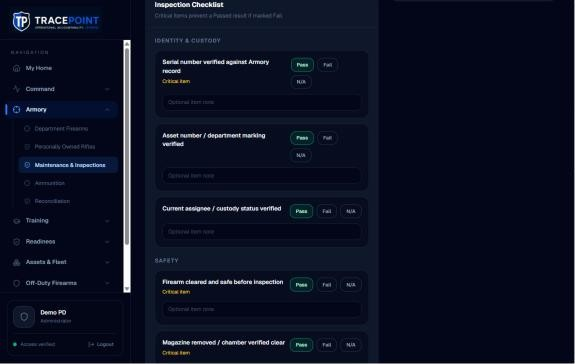
Inspection form
- FixNineteen items each sit in their own card in a narrow left column while the right half stays empty, so the form is 4,042px tall.
- FixThe Pass / Fail / N/A buttons are under 32px and wrap inconsistently, and every item shows a notes field whether it's needed or not.
- TuneUse a compact checklist table: item, critical marker, a segmented control across the full width. The note field opens only on Fail. Keep a sticky summary bar with the result.
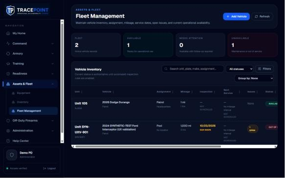
Fleet Management
- FixAt 1280px the table is clipped (Status reads "AVAILAB") and needs a white sideways scrollbar.
- FixRepeated "NOT SCHEDULED" micro-caps and "1 mi / 1 hrs" stacked without labels. Unit numbers wrap onto two lines.
- TuneDrop columns down to Unit, Vehicle, Assignment, Status, Next due and Issues, and move the rest to the record. Make the row the link instead of VIEW QR / EDIT / OPEN text buttons.

Vehicle record
- KeepThis is the best page header in the product: back link, icon, title, status chip and actions in one row. Make it the template.
- FixIt has three filled action colors (green, amber, blue) plus two unlabeled icon buttons.
- FixEach overview field sits in its own bordered tile. "Manage Status" is a stack of colored pills where one click changes status, which looks decorative and is easy to misclick.

Qualifications
- KeepThe split view (list on the left, officer detail on the right) is the right pattern. Reuse it for Training Alerts and Off-Duty requests.
- Fix59 blocks of faint small text, a stray "Qualification records loaded" line, raw firearm IDs, and "No record" in muted gray instead of a warning.
- TuneThe title says "Qualification History" while the menu says "Qualifications".
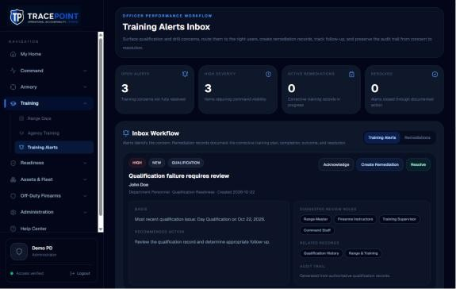
Training Alerts
- FixEvery alert is a full-width card with four boilerplate blocks and a chip cloud, so three alerts take three screens. An inbox should be a dense list.
- FixThree action styles sit side by side (outline, tinted blue, tinted green).
- TuneUse list rows (severity bar, officer, issue, age, status) with a detail drawer, and one primary "Review" action.
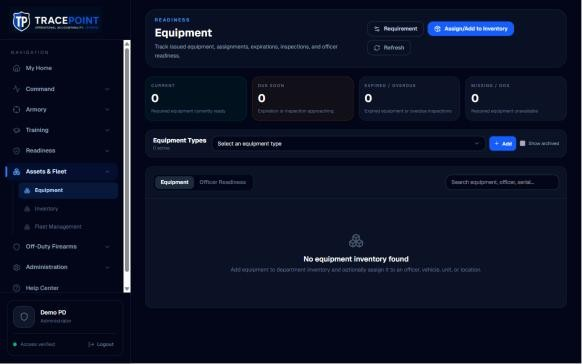
Equipment
- FixThe header buttons wrap ("Refresh" drops to a second line). Zero-value tiles are tinted green, amber and red.
- KeepThe centered empty state with an icon is the right idea.
- TuneGive the empty state its primary action and the three set-up steps: types, then requirements, then items.
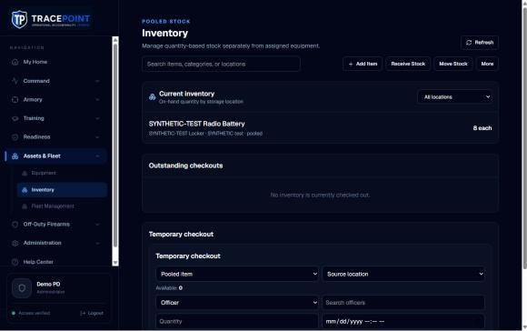
Inventory
- FixIt looks like a different product: plain header, all-outline square buttons, a "More" menu that hides key setup, and Refresh in the primary spot.
- FixA permanent checkout form takes half the page, its heading is duplicated, and its fields are placeholder-only.
- TuneUse the list template (header with Add Item, a table of items by location), with Receive, Move and Check out as row or toolbar actions that open sheets.
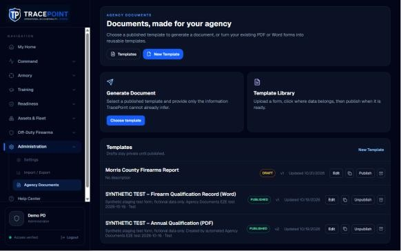
Agency Documents
- TuneThe two feature cards above the list repeat what the header already says. Lead with the template list.
- FixEach row has five small controls, two of them icon-only (Duplicate, Archive). Use a main "Use template" action plus a "…" menu.
- KeepThe Draft and Published chips and the version and date metadata are well structured.
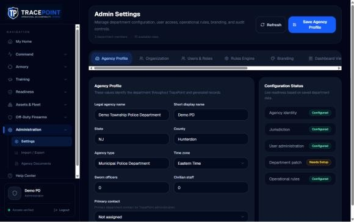
Settings
- KeepThe Agency Profile form is the cleanest form in the app: two columns, real labels, comfortable inputs. Use it as the form template.
- FixNine horizontal tabs overflow with a white scrollbar at 1280px, and the save button's label wraps onto two lines.
- TuneReplace the tabs with a left settings rail (Agency, People & roles, Policies by module, Integrations, Personal), the pattern most enterprise admin consoles use.
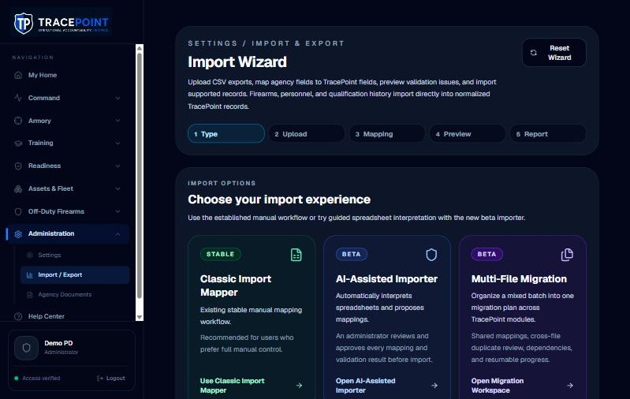
Import wizard
- FixThe five-step tracker shows before you've picked an importer, and only the classic importer uses those steps.
- TuneThree bordered cards in green, blue and violet compete. Pick one recommended path and show the others as secondary links.
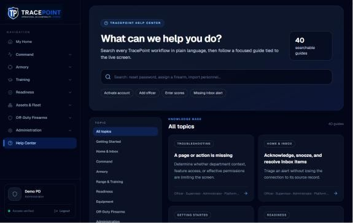
Help Center · benchmark
- KeepThis is the most premium screen: a focused hero, a large search field, quick chips, a topic rail and an even card grid. Its spacing and hierarchy are the target for the rest of the app.
- TuneAt 5,320px the topic grid is long. Paginate or group it by role.
Tablet and phone
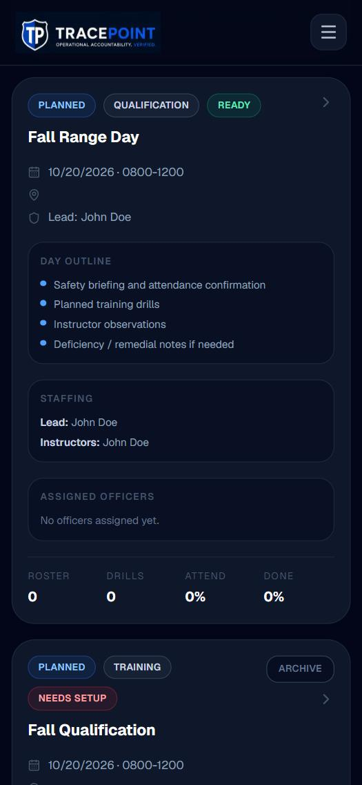
Phone (375px)
- FixRange-day cards are 565px each, about 70% of the screen, mostly the same repeated outline.
- FixThe Fleet table stays a 1,260px table in a 350px window. Only Unit and Vehicle are visible.
- FixFilter controls stack into five or more full-width rows before any data, and on Firearms the first row starts at y≈770.
- FixThe 37.6px hamburger and the 9–11px labels are too small for gloved or on-the-move use.
- KeepThe scoring board's large score inputs, decimal keypad and sticky save bar are the right phone pattern.
Tablet (768px)
- FixThe sidebar collapses into a hamburger at 768px. Tablets (range, armory, fleet bay) should keep a collapsed icon rail.
- FixThe Fleet table and the Settings tab bar both show white native scrollbars.
- TuneTwo-column KPI tiles take a whole screen before any content. On tablet, use one compact strip of four.

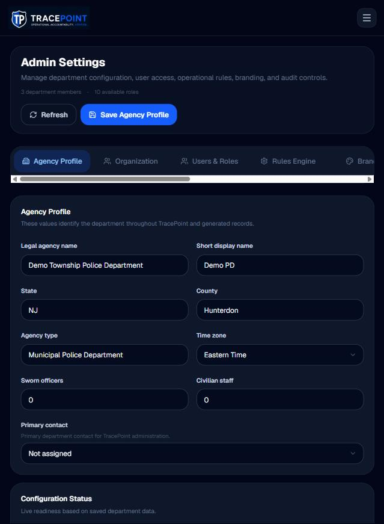
Design direction
Keep the dark command-center identity. It suits a readiness product used in dispatch rooms, range shacks and patrol cars. Make it calmer and more legible: fewer frames, larger data, color only where it means something. Use the Help Center and the vehicle record header as the reference screens.
Type scale
- 12 caption · 13 label · 14 body · 16 emphasis · 20 section · 24 page title · 32 KPI
- Labels in sentence case at 13px, muted. Uppercase only in table headers (11px, +0.06em).
- Serials, asset tags, plates and scores in Geist Mono with tabular figures.
Space & shape
- 4px base: 4, 8, 12, 16, 24, 32, 48.
- Radius: 6 (controls), 10 (cards), full (chips). Drop 16, 24 and 32.
- Page gutter 24 desktop, 16 phone. Section gap 32.
- Elevation through surface tone, not borders: page → surface → raised.
Color roles
- Neutrals tinted toward navy: page, surface, raised, line, text, muted.
- One accent (today's blue-500) for actions, selection and focus.
- Status: success, warning, danger, info, neutral, each with a text color, a soft fill and a chip.
Page templates
- List: PageHeader, KPI strip (optional), filter bar, DataTable or cards, side drawer.
- Record: header with status, facts grid, tabs, activity.
- Dashboard: action list first, then KPIs, then module cards.
- Form: two-column fields, sticky footer with one primary action.
- Settings: left rail plus a form panel.
Core components
- PageHeader · Button (3 variants × 2 sizes) · StatusChip · KpiTile
- DataTable (card mode under 640px) · FilterBar / FilterSheet
- Field (label, help, error) · Segmented control · Sheet / Drawer · ConfirmDialog
- EmptyState (icon, line, primary action) · Skeleton · Toast
Rules of thumb
- One primary button per view.
- No card inside a card.
- Color on status only, and never on a zero.
- Nothing under 12px. Touch targets ≥ 44px.
- The page title matches the menu label.
- No IDs, developer copy or native dialogs in the UI.
Top 15 visual changes, highest value first
- Ship the token layerColor roles, type scale, spacing and radius inS · foundation
globals.cssand the Tailwind theme, replacing the create-next-app default. - One PageHeader on every screenRemoves four header styles, the duplicate firearm title and the misleading eyebrows.S
- Raise the type floor to 12px and drop most uppercaseThe single biggest legibility gain, across Range Days, Qualifications, Fleet and Alerts.M
- Button kit with one primary per viewFixes the rainbow actions on the vehicle record and Alerts, and the wrapped labels.S
- Flatten card-in-cardVehicle overview, range-day cards, Inventory checkout, Settings sections.M
- DataTable with phone card modeFleet, Firearms and Inventory: pinned first column, dark scrollbars, fewer columns.M
- One KpiTile, neutral at zeroDashboard, Range, Fleet, Equipment, Alerts and Off-Duty, with meaningless icon colors removed.S
- Semantic StatusChipOne chip per status role. Due-soon and overdue look the same everywhere.S
- Command Pulse: action list firstReorder the layout and fix the grid gap and wrapped labels.S
- Compact range-day listDate block, chips, lead, roster and readiness meter, so 6–8 days fit per screen.M
- Inspection checklist as a compact tableFull-width rows, a segmented control, the note field only on Fail, a sticky result bar.M
- Settings left railReplaces nine overflowing tabs and separates personal from agency settings.M
- Tablet icon railKeep navigation visible at 768–1024px.S
- Polish passTransparent SVG logo, styled date pickers and scrollbars, no empty icon rows, no stray status text, no UUIDs.S
- Inventory and Training Alerts onto the list templateBring the two outlier screens into the same family as Firearms and Qualifications.M
Effort: S = days, M = 1–2 weeks for one engineer, after the token layer exists.